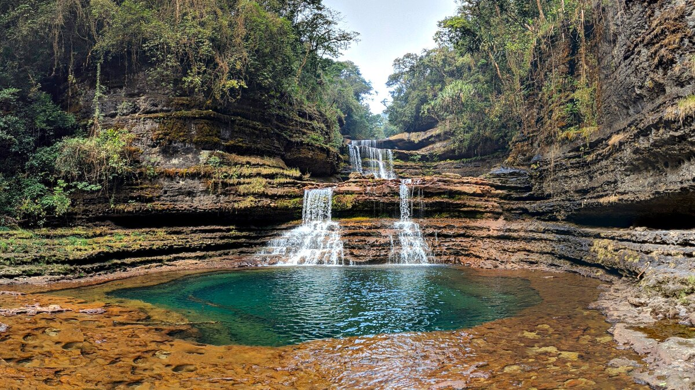
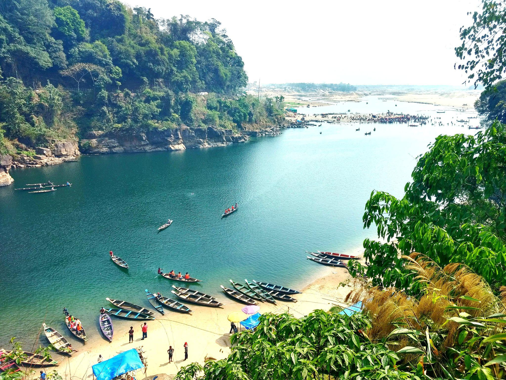
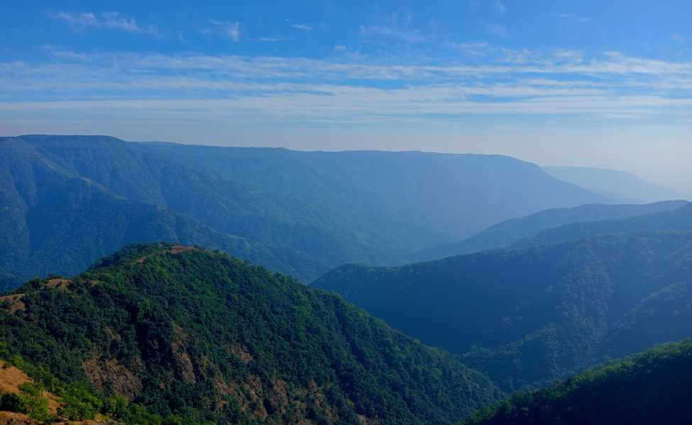

Shillong is the capital city of Meghalaya and is known as the “Scotland of the East.” The city is famous for its pleasant climate, waterfalls, lakes, and green hills. Popular attractions include Shillong Peak, Ward’s Lake, and Elephant Falls. Shillong also has lively cafes, local markets, and beautiful viewpoints. It is one of the most visited hill stations in Northeast India.

Cherrapunji is famous for heavy rainfall, waterfalls, caves, and mist-covered valleys. It is home to Nohkalikai Falls, one of the tallest waterfalls in India. The town is surrounded by green landscapes and dramatic cliffs. Visitors also enjoy exploring Mawsmai Cave and scenic viewpoints. Cherrapunji is a paradise for nature lovers and photographers.

Dawki is famous for the crystal-clear Umngot River where boats appear to float on air. The transparent water and surrounding hills create breathtaking scenery. Tourists enjoy boating, camping, and photography here. Dawki is also located near the India–Bangladesh border. It is one of the most beautiful river destinations in India.

Nongriat is famous for the Double Decker Living Root Bridge created naturally from tree roots. Visitors trek through forests and stone steps to reach this wonder. The area is surrounded by waterfalls, rivers, and lush greenery. Rainbow Falls near Nongriat is another major attraction. It is a perfect destination for trekking and adventure lovers.

Mawsynram is one of the wettest places on Earth and is known for its cloudy weather and green landscapes. The village is surrounded by caves, waterfalls, and misty hills. Heavy rainfall keeps the region fresh and beautiful throughout the year. Visitors enjoy peaceful surroundings and scenic mountain views. It is one of Meghalaya’s most unique natural destinations.